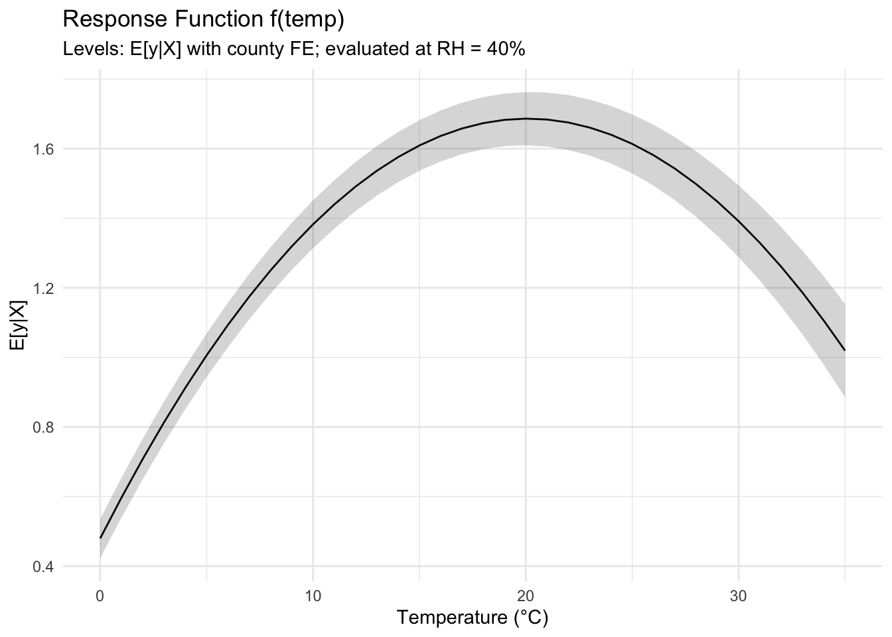
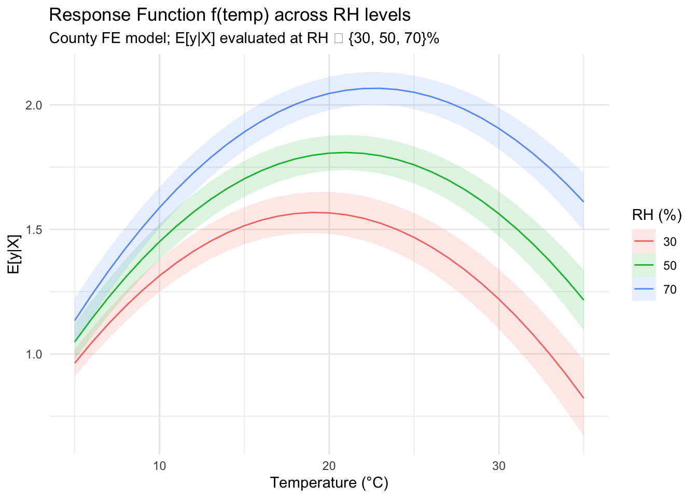

Using fixest + marginaleffects to plot response functions with fixed effects
data
Author
Patrick Baylis
Published
September 25, 2025
In a 2021 post I shared code for plotting partial predictions from models with high-dimensional fixed effects (like those produced by fixest), which is useful when we need a to plot a response function for how some outcome changes with respect to temperature. I am happy to report that that code is now basically obsolete thanks to the marginaleffects package. This post shows how to plot such functions.
A quick review
Temperature affects a lot of stuff. Researchers working in climate impacts often want to examine how an outcome is affected by temperature. For example, a relationship of significant interest to our literature is the link between temperature and mortality (TODO ADD CITES). The thing is, there’s a lot of good medical reasons to think that the effect might be non-linear, i.e., that mortality might be higher when it’s cold or hot than when the temperature is moderate. Finally, we might want to control for correlations between the outcome and climate that aren’t actually a result of the temperature, such as that Miami might just have higher mortality rates than Minnesota.
In econometric-speak, a generic form of a model we could use to investigate this relationship (using only unit fixed effects for brevity) is:
where \(y_{it}\) is the outcome of interest (e.g., log mortality), \(f(T; \beta)\) is a flexible function of temperature (e.g., polynomial, splines), \(\phi_i\) are unit fixed effects, and \(\varepsilon_{it}\) is an error term.
Our task is to reproduce an estimate of \(f(T; \beta)\) that, holding everything else equal, shows how the outcome changes with temperature relative to some baseline temperature. We also want to get a sense of our certainty around that estimate, i.e., a confidence interval. That’s what I wrote a bunch of code back in 2021 to do, but now marginaleffects::prediction can do it for us.
Simulation
We’ll simulate this with a made-up outcome and temperature data, so we can control the “data-generating process.” and confirm that the model is reproducing what we are hoping for. We’ll also throw an extra element: we’ll allow the outcome to be affected by humidity as well, and the interaction of temperature and humidity. This is meant to capture the fact that humans tend to be more affected by heat when humidity is higher. The following generates the made-up data and estimates the appropriate model to extract \(f(T)\).
library(fixest)library(marginaleffects)library(ggplot2)set.seed(42)# --- Simulate panel data: 50 counties x 200 days ---n_county <-50n_day <-200county <-factor(rep(paste0("c", 1:n_county), each = n_day))day <-rep(1:n_day, times = n_county)# Weather: temperature (C) & relative humidity (%)temp <-10+10*sin(2*pi*day/200) +rnorm(n_county*n_day, 0, 3)rh <-50+15*cos(2*pi*day/200) +rnorm(n_county*n_day, 0, 7)# Outcome: nonlinear in temp, modest in RH, county FEy <-0.1*temp -0.003*temp^2+0.002*rh +0.0005*temp*rh +rnorm(n_county*n_day, 0, 0.5) +rnorm(n_county, 0, 0.6)[county]dat <-data.frame(y, temp, rh, county, day)# Flexible model with county fixed effects and nonlinear terms# (Include interaction to allow humidity to modulate heat effects)mod <-feols(y ~ temp +I(temp^2) + rh + temp:rh | county, data = dat)summary(mod)
Now we want to plot the response function with the predictions function from the marginaleffects package. We create some fake data (which needs to include all the variables in the model, but only temperature needs to vary).
TODO: I don’t know how to get the CI to be 0 at some holdout value. So I guess I don’t really know what we’re producing here. Maybe I actually want comparisons? I guess I need to read the stupid manual.
grid <-data.frame(temp =seq(0, 35, by =1),rh =40,county =factor("c1", levels =levels(dat$county)))pr <- marginaleffects::predictions(mod, newdata = grid)ggplot(pr, aes(x = temp, y = estimate)) +geom_line() +geom_ribbon(aes(ymin = conf.low, ymax = conf.high), alpha =0.2) +labs(title ="Response Function f(temp)",subtitle ="Levels: E[y|X] with county FE; evaluated at RH = 40%",x ="Temperature (°C)",y ="E[y|X]" ) +theme_minimal()

Overlay: humidity modulation (30%, 50%, 70%)
library(dplyr)
Attaching package: 'dplyr'
The following objects are masked from 'package:stats':
filter, lag
The following objects are masked from 'package:base':
intersect, setdiff, setequal, union
rh_vals <-c(30, 50, 70)grid_multi <-expand.grid(temp =seq(5, 35, by =1),rh = rh_vals) |>mutate(county =factor("c1", levels =levels(dat$county)))pr_multi <- marginaleffects::predictions(mod, newdata = grid_multi) |>mutate(rh =factor(rh, levels = rh_vals))ggplot(pr_multi, aes(x = temp, y = estimate, color = rh, fill = rh)) +geom_line() +geom_ribbon(aes(ymin = conf.low, ymax = conf.high), alpha =0.15, linewidth =0) +labs(title ="Response Function f(temp) across RH levels",subtitle ="County FE model; E[y|X] evaluated at RH ∈ {30, 50, 70}%",x ="Temperature (°C)",y ="E[y|X]",color ="RH (%)",fill ="RH (%)" ) +theme_minimal()

Interpretation & extensions
The lines trace the predicted outcome at each °C, holding RH fixed. Nonlinearities (quadratic + interaction) shape the curve.
Replace county with unit × time FE (e.g., | county + factor(day)), or add seasonality and trends as needed.
To study humidity modulation, vary the rh value in grid and overlay multiple curves (as above).
Common pitfalls
Wrap polynomial terms with I() (e.g., I(temp^2)) so R treats them as arithmetic.
Ensure factor levels in newdata match the modeling data (factor(..., levels = levels(dat$factor))).
Predictions do not include FE uncertainty; interpret them as conditional on the chosen FE level.
References
fixest documentation: ?feols
marginaleffects vignettes: vignette("marginaleffects") and ?predictions